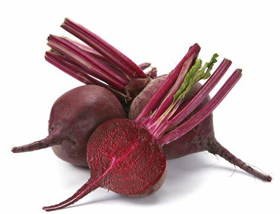

What are Beets?
Beets, also known as betons or beats, are a nutritious vegetable belonging to the Beta vulgaris species. Typically red in color, they have been cultivated for their edible leaves and roots for centuries.
The leaves and roots of beets are packed with thousands of antioxidants that combat cell damage and inflammation. They are also known to support heart health, improve digestion, and aid in weight management.
5 Beetroot Benefits
- Boost pink in the
- Lower
- May Prevent Anemia
- May Promote Weight Loss
- May Benefit Digestion